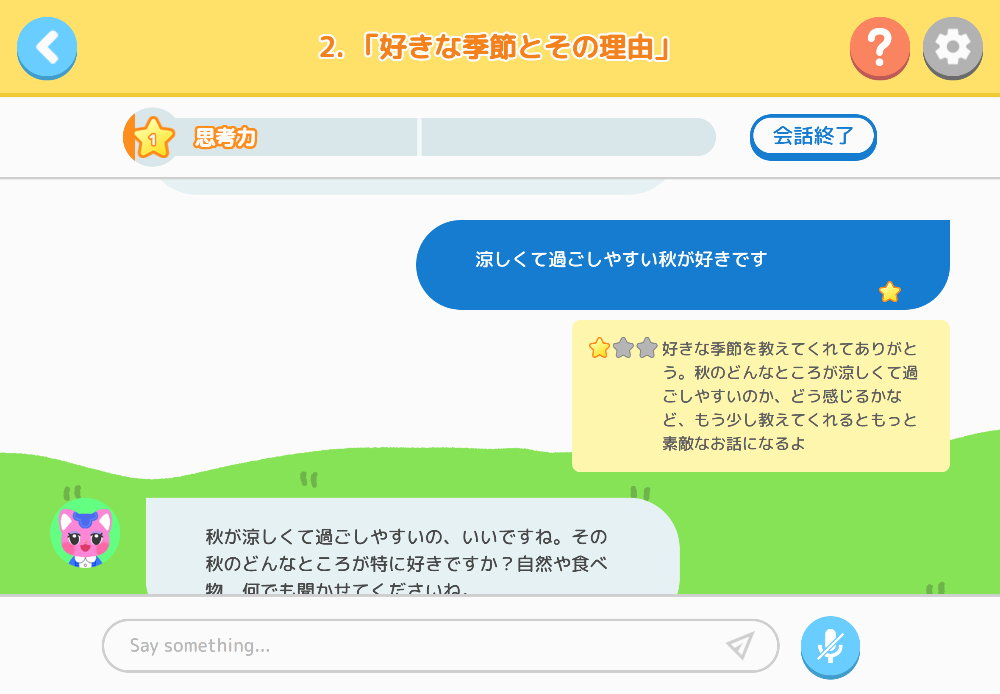
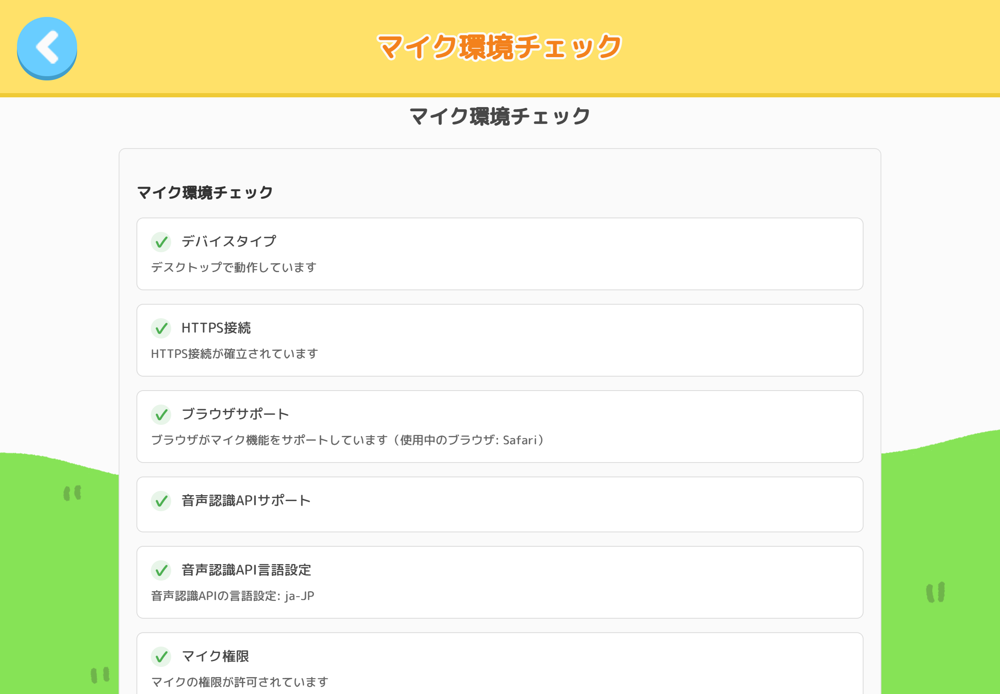

2. 機能リファレンス
2.1 タイトル画面
アプリへのログインを行う画面です。
- パスワードの入力について: 大文字・小文字は区別されます
- パスワードの管理について: 児童生徒が他の人に教えないよう注意してください
Q
ログインができない
A
ユーザー名とパスワードが正しく入力されているか確認してください。大文字・小文字を区別されます。
Q
アカウントが作成されていません
A
学校管理者に連絡して、アカウント作成を依頼してください。
2.2 メインメニュー
学習内容を選択する画面です。
Q
「テーマについて話す」と「プレゼントレーニング」のどちらから始めればいいですか？
A
初回は「テーマについて話す」から始めてください。「プレゼントレーニング」はテーマについて話した後に行う事が出来ます。
2.3 会話テーマ選択画面
AI先生と話したいお題を選ぶ画面です。
- 会話内容削除について: 会話内容を削除すると会話履歴だけでなく、そのお題のプレゼン音声やデータも一緒に削除され、元に戻すことはできません。
Q
新しいお題が表示されません
A
前提条件となるお題をクリアするようにしてください。
2.4 チャット画面
AI先生とお題について対話を行う画面です。

メッセージ評価システム
- 生徒のメッセージには★0〜3の評価が付きます。
- メッセージをタップするとAI先生のアドバイスが表示されます。
評価基準とポイント
- ★3： 体験＋理由＋具体例を含む回答 → 思考力ゲージ：5ポイント
- ★2： 体験＋理由を含む回答 → 思考力ゲージ：3ポイント
- ★1： 簡単な回答 → 思考力ゲージ：1ポイント
- ★0： テーマから逸脱した回答 → 思考力ゲージ：0ポイント
会話が終了すると、画面下部に「キーワードボタン」と「プレゼンボタン」が表示されます。
まずはキーワードボタンを押して、会話内容を整理しましょう。
- メッセージの送信回数制限について: 1つのお題に対して、メッセージを送信できるのは最大100回までです。それを超えると会話のキーワード抽出ができなくなります
Q
思考力ゲージが中々溜まりません
A
以下のコツを伝えてください
・一言だけでなく、体験や考えを詳しく話す
・「なぜそう思ったか」理由も一緒に話す
・話の順番を考えて分かりやすく話す。
Q
会話を終了するタイミングは？
A
思考力ゲージが25ポイント以上溜まったら終了して問題ありません。ただし、100回を超えて会話はしないようにしてください。
2.5 キーワード画面
会話内容から抽出されたキーワードを確認・整理する画面です。
2.6 プレゼンテーマ選択画面
プレゼン練習を行いたいテーマを選択する画面です。
- 表示されるお題について: AI先生との会話パートでキーワード確認まで終えているテーマのみ表示されます
2.7 プレゼンデータ選択画面
新規作成や、過去のプレゼンデータの確認・管理を行う画面です。
- プレゼンデータの削除について: データは削除すると元に戻すことはできません。
- 保存できるデータ数について: ひとつのお題に対して保存できるデータは3つまでです。新たにデータを作成したい場合は、既存のプレゼンデータを削除する必要があります。
2.8 プレゼントレーニング画面
設定した時間内でプレゼンを行い、表現力を鍛える画面です。
- データの記録について: プレゼンの発話量が50文字以下だとデータが保存されないため、十分な内容を話すようにしてください
- 自動終了について: 設定した時間が過ぎてからしばらくすると自動で記録が終了します
Q
時間設定はどう選べばいいですか？
A
初回は60秒から始め、慣れてきたら120秒、180秒と段階的に延長することをお勧めします。
2.9 プレゼンフィードバック画面
プレゼンの評価・アドバイスが確認できる画面です。
評価の5軸：
- テーマ: お題について適切に話しているか
- 独創性: 自分の考えや体験を話しているか
- 構成力: 聞き手を引き込む話し方をしているか
- 根拠: 自分の考えに理由や具体例を添えているか
- 情報量: 十分な内容を話しているか
2.10 設定画面
アプリの基本情報確認とログアウトを行う画面です。
- セキュリティ確保のため、共用端末では毎回ログアウトを徹底してください。
2.11 マイク環境チェック
生徒の音声入力が上手くいかない時に、マイク環境を診断・解決するためのツールです。

こんな時に使います
- チャット画面やプレゼントレーニングで音声入力ができない
- 音声認識がうまく動作しない
- 共用端末でマイク設定が変わった可能性がある
- マイクを接続・変更した後
- 初めて端末を使用する時
アクセス方法
- 画面右上の設定ボタン（歯車マーク）をクリック
- 「マイク環境チェック」ボタンをクリック
画面の構成
1. マイク環境チェック（自動診断）
ページを開くと自動的に以下の8項目をチェックします：
- デバイスタイプ（PC/タブレット/スマホ）
- HTTPS接続の確認
- ブラウザの対応状況
- 音声認識APIのサポート
- 言語設定（日本語）
- マイク権限の状態
- マイクデバイスの検出（使用中のマイクは太字で表示）
- マイクアクセステスト
各項目は ✓（緑色）= 正常、×（赤色）= 問題あり で表示されます。問題がある項目には「解決方法：」が表示されますので、その指示に従ってください。
2. 音声認識動作テスト（10秒間の実動作確認）
- 「音声認識をテスト」ボタンをクリックするとテストが始まります
- マイクに向かって10秒間話してください
- 音量メーターが反応することを確認（10本のバーが緑色に変化）
- 認識結果ボックスに話した内容が文字で表示されることを確認
※注意： 環境チェックがすべて✓になるまで、動作テストは実行できません。
活用のポイント
- 第一診断ツールとして活用： 生徒が「音声が入らない」と訴えた時、まずこの機能で状況を確認してください
- 使用中のマイクを確認： 複数のマイクが接続されている場合、太字で表示されているデバイスが現在使用中です
- 共用端末での定期チェック： 前の生徒がマイク設定を変更している可能性があるため、音声機能を使う前のチェックを推奨します
- Firefoxは非対応： Firefoxでは音声認識APIが使えません。Chrome、Edge、Safariのいずれかを使用してください
- モバイル・タブレット端末の制限: スマートフォンやタブレットはメモリ制限があり、アプリがバックグラウンドになると録音が停止する場合があります。長時間の録音が必要な場合はデスクトップ端末を推奨してください
- HTTPS接続必須: マイク機能はHTTPS接続でのみ動作します
- ブラウザ権限: 初回使用時、ブラウザからマイク権限の許可を求められます。必ず「許可」を選択してください
Q
「マイクの権限が拒否されています」と表示される
A
ブラウザのマイク権限設定を確認してください：
Chrome/Edgeの場合：
1. アドレスバー左側の鍵マークまたはカメラアイコンをクリック
2. 「マイク」の設定を「許可」に変更
3. ページを再読み込み
Safariの場合：
1. Safari メニュー → 「設定」→「Webサイト」タブ
2. 左側メニューから「マイク」を選択
3. 該当サイトを「許可」に設定
4. ページを再読み込み
Q
「マイクが検出されませんでした」と表示される
A
以下の点を順番に確認してください：
1. マイクが端末に正しく接続されているか（USBマイク、ヘッドセット等）
2. Windows の場合：設定 → システム → サウンド → 入力 で、マイクが認識されているか確認
3. マイクがミュートになっていないか
4. 他のアプリケーションがマイクを占有していないか（ビデオ会議アプリ等を終了）
5. ブラウザを再起動してみる
Q
音量メーターは反応するが、文字が認識されない
A
以下を確認してください：
1. マイクの位置と音量： マイクを口元に近づけ、はっきりと話してください
2. 周囲の雑音： 静かな環境で試してください
3. 言語設定： ブラウザの音声認識設定が日本語になっているか確認
Chrome/Edge: 設定 → プライバシーとセキュリティ → サイトの設定 → その他のコンテンツの設定 → 音声認識
4. マイク感度： Windows のサウンド設定でマイクの入力音量を上げてみる
Q
Firefoxで音声認識が使えない
A
Firefoxは音声認識API（Web Speech API）に対応していないため、SPEAK STARの音声機能は使用できません。
以下のブラウザをご使用ください：
・Google Chrome（推奨）
・Microsoft Edge（推奨）
・Safari（Mac/iOSの場合）
Q
複数のマイクが表示される場合、どれを使えばいいですか？
A
太字で表示されているマイクが現在使用中のデバイスです。
使用するマイクを変更したい場合：
1. Windows の場合：設定 → システム → サウンド → 入力 → 「入力デバイスを選択」で変更
2. 変更後、「マイク環境をチェック」ボタンを押して再診断
3. 太字表示が目的のマイクに変わっていることを確認
Q
すべてのチェックが✓なのに、実際のチャット/プレゼンで音声入力できない
A
以下を確認してください：
1. チャット画面の場合： マイクボタン（画面下部）を押して、ボタンの色が変化していることを確認
2. プレゼントレーニングの場合： スタートボタンを押して録音が開始されていることを確認
3. ブラウザのタブが複数開いている場合、他のタブでマイクを使用していないか確認
4. それでも解決しない場合は、一度ログアウトして再ログインしてみてください